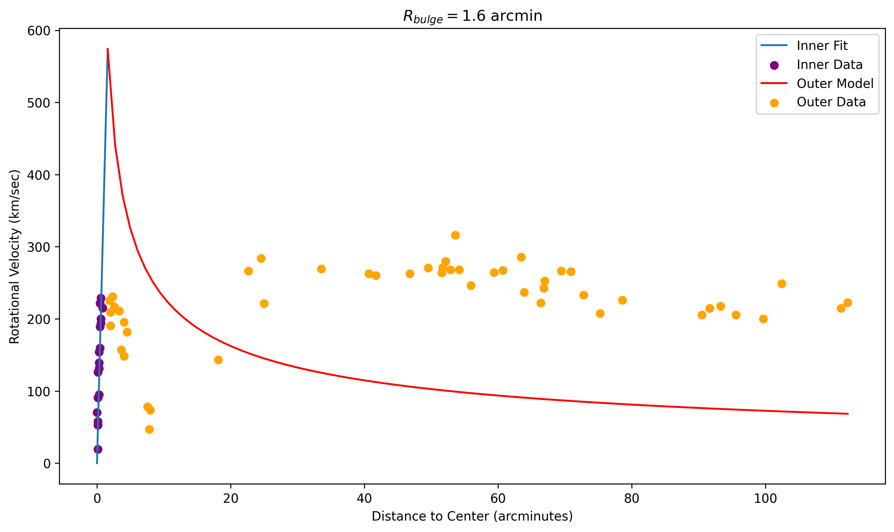

Astronomy • Scientific Computing • Data Analysis
Andromeda Galaxy Rotation Analysis
A Python-based analysis of observational rotation data from the Andromeda Galaxy, comparing measured rotational velocities with a simplified theoretical model of galactic motion.
Overview
Project Overview
This project was completed as part of my coursework at the University of California, Riverside. I used Python to analyze observational data associated with Vera C. Rubin and W. Kent Ford Jr.'s study of the rotation of the Andromeda Galaxy.
The goal was to examine how rotational velocity changes with distance from the center of the galaxy and compare the observational measurements with a simplified theoretical model.
Scientific Context
Galactic Rotation
The Andromeda Galaxy, also known as M31, is a nearby spiral galaxy whose rotational motion can be studied by measuring the velocity of material at different distances from its center.
In this analysis, the galaxy was divided into an inner region and an outer region. The observational data were then compared with mathematical models describing how rotational velocity should behave in each region.
Methods
Data Processing and Modeling
I imported the observational dataset from a CSV file using pandas. The dataset contained measurements of distance from the galactic center, in arcminutes, and rotational velocity, in kilometers per second.
I divided the dataset at a bulge radius of 1.6 arcminutes, separating the measurements into inner and outer galactic regions.
For the inner region, I modeled rotational velocity as increasing linearly with radius:
I used SciPy's curve_fit function to determine the best-fit value of the parameter A from the inner-region observational data.
I then used that fitted parameter to construct a theoretical model for the outer region:
NumPy was used to generate smooth ranges of values for the model curves, while Matplotlib was used to visualize both the observational data and the theoretical predictions.
Workflow
Analysis Process
Import Data
Read the observational dataset from a CSV file using pandas.
Separate Regions
Divide the measurements into inner and outer regions using a bulge radius of 1.6 arcminutes.
Fit Inner Model
Use SciPy curve fitting to determine the best-fit parameter for the inner rotation model.
Model Outer Region
Use the fitted parameter to calculate the predicted outer rotation curve.
Visualize Results
Plot the observational measurements and theoretical models together using Matplotlib.
Results
Rotation Curve Comparison
The final visualization compares the measured rotational velocities with the fitted inner model and theoretical outer model.

Interpretation
Comparing Prediction and Observation
The outer-region model predicts a decrease in rotational velocity as distance from the center of the galaxy increases. The observational measurements can be compared directly with this predicted behavior.
Differences between the theoretical prediction and observed galactic rotation provide a way to investigate whether the distribution of visible matter alone is sufficient to explain the galaxy's motion.
Skills
Tools Used
Takeaways
What I Learned
This project strengthened my experience working with scientific data in Python and introduced me to computational curve fitting using SciPy.
It also gave me experience combining observational astronomy, mathematical modeling, data visualization, and scientific interpretation within a single analysis.